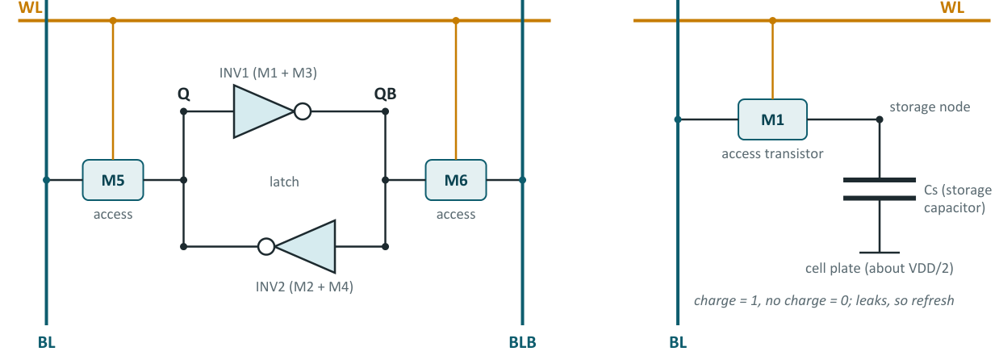
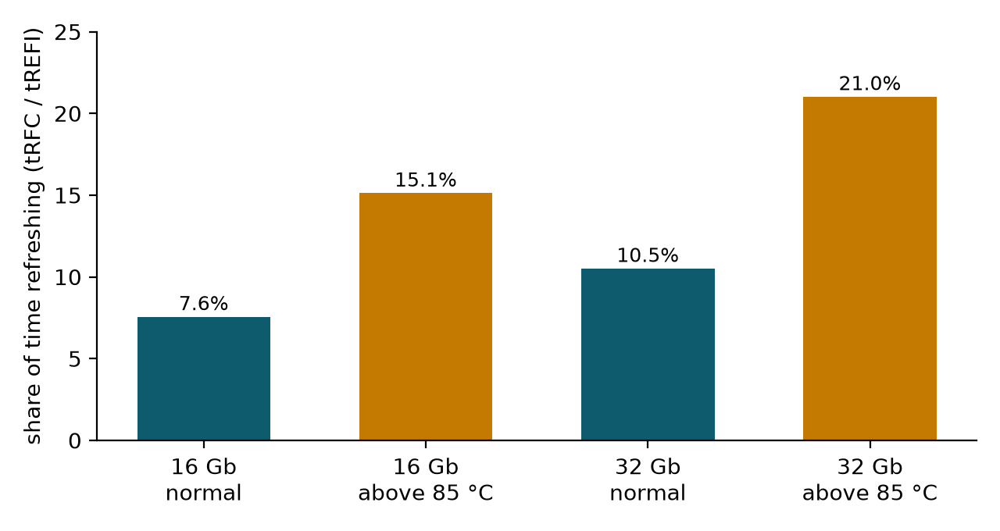

Chapter 2: Cells, Refresh and the Array¶
Every RAM is a grid of cells, and the two cells that matter most are the six-transistor SRAM cell and the one-transistor, one-capacitor DRAM cell. This chapter shows how each stores a bit, why the DRAM cell leaks and must be refreshed (and what that costs in time), and how billions of cells are organised into banks, rows and columns so that any one of them can be found in nanoseconds. It ends with a complete addressing example for a real 16 Gb chip. These ideas are the foundation for the timing and interface material of Chapter 3.
2.1 Two ways to store a bit¶
The two main volatile technologies differ in how a single bit is held. SRAM (static RAM) stores a bit in a small latch, two inverters connected in a loop, that keeps its value for as long as power is applied. The standard cell uses six transistors and is called 6T SRAM. DRAM (dynamic RAM) stores a bit as electric charge on a tiny capacitor, switched by one access transistor: the 1T1C cell. Because the DRAM cell is so much smaller, DRAM is far denser and cheaper per bit. Because the SRAM cell actively drives its bitlines, SRAM is much faster.

For scale, a high-density SRAM cell at a 7 nm logic process is about 0.027 µm², while a modern DRAM cell is roughly 0.001 µm², which is about 27 times smaller.
2.2 The 6T SRAM cell¶
Two cross-coupled inverters (four transistors) form a latch. Each inverter's output drives the other's input, so the cell rests in one of two stable states, with complementary values on the internal nodes Q and QB. An analogy: two people leaning back to back, each holding the other upright. Two access transistors, M5 and M6, switched on by the wordline, connect Q and QB to the complementary bitlines BL and BLB.
Reading. Both bitlines are first precharged high. The wordline is then raised, and the side of the cell holding a 0 starts to pull its bitline down. A sense amplifier detects which bitline begins to fall.
Writing. Strong drivers force the bitlines to opposite values and overpower the latch, flipping it if necessary.
These two operations pull in opposite directions. A read must not flip the cell, and a write must flip it, and the two goals conflict as the supply voltage drops. Designers describe the first with the cell ratio, the strength of the pull-down NMOS transistor compared with the access transistor, which must be comfortably greater than one. Writability depends on the pull-up ratio: the access transistor must be able to overpower the PMOS pull-up. The margins are measured as the static noise margin (SNM) in hold and in read, and as the write margin, often from "butterfly curves", the two inverter transfer curves plotted against each other.
Strengths and weaknesses. The 6T cell is very fast (well under a nanosecond for small first-level cache arrays), needs no refresh, and is made in the same process as logic, so it sits right beside the processor cores. But six transistors per bit make it many times larger than a DRAM cell, its area has shrunk only slowly at the newest process nodes, and idle cells still leak current.
2.3 The 1T1C DRAM cell¶
A DRAM cell is a tiny bucket of charge: a full capacitor means 1, an empty one means 0. The access transistor is a tap that opens when the wordline is switched on. With only two parts per bit, billions fit on one chip. The capacitor's other plate, the cell plate, sits at about half the supply voltage.
Two properties follow from this simple cell.
First, the charge is tiny and it leaks. The charge on the capacitor, a few femtocoulombs, slowly drains away through the transistor and the surrounding silicon. If a stored 1 loses so much charge that it falls below the halfway line, the chip would read it as 0 and the data would be corrupted.
Second, reading is destructive. When the access transistor opens, the cell shares its charge with the much larger capacitance of the bitline. The change in the bitline voltage is small, and the sense amplifier must amplify it and then write the full value back into the cell. Every read of a DRAM row therefore includes a rewrite.
This is why DRAM needs a refresh, and why the circuits around a DRAM array (sense amplifiers, precharge and write-back) are as important as the cell itself.
2.4 Refresh¶
To stop data fading, the memory controller, or the chip itself, must refresh every row (read it and write it back) within a fixed window, typically 32 or 64 milliseconds. A gardener walking along a row of leaky buckets and topping each up before it runs dry is the picture to hold. In hot weather the buckets leak faster, so the gardener must walk twice as often.
For DDR5 the course gives these figures. Every row is refreshed within 32 ms, using 8192 refresh commands, one about every
Above 85 °C the interval halves, because leakage roughly doubles for every 10 °C rise. During one refresh command the chip is busy for the refresh cycle time \(t_{RFC}\), about 295 ns for a 16 Gb chip, and 410 ns for a 32 Gb chip. The fraction of time lost to refresh is
Example 2.1: What refresh costs
- 16 Gb chip, normal temperature: \(295 / 3900 = 0.0756\), so 7.6 per cent of the time.
- 16 Gb chip above 85 °C: \(t_{REFI}\) halves to 1950 ns, so \(295 / 1950 = 0.151\), or 15.1 per cent.
- 32 Gb chip, normal: \(410 / 3900 = 0.105\), or 10.5 per cent.
- 32 Gb chip, hot: \(410 / 1950 = 0.210\), or 21.0 per cent.
Refresh costs time (the bank is busy) and energy, and the cost grows as chips get larger, since a larger chip has more rows to refresh per command. If the 65,536 rows of a bank are spread evenly over 8192 commands, each command must refresh 8 rows per bank.

DDR5 reduces the damage with same-bank refresh, which refreshes one bank in each bank group while the others keep working, instead of stalling the whole chip. SRAM has no such problem, which is one reason it is used where speed and predictability matter most.
Retention in numbers
A cell that must hold a charge for 32 ms between refreshes has a tiny leakage budget. If the storage capacitor is 20 fF, charged to 1.1 V, and the sense amplifier can tolerate a droop of 0.3 V, the largest steady leakage current that survives the window is \(I = C\,\Delta V / t = 20\ \text{fF} \times 0.3\ \text{V} / 32\ \text{ms} \approx 188\) fA. That is about a fifth of a picoampere, which is why the DRAM access transistor must leak almost nothing and why DRAM is made in a dedicated process (Chapter 15).
2.5 How a DRAM chip is organised¶
To find one bit the chip needs an address, like a postal address: which district (bank), which street (row) and which house (column). Rows run along wordlines and columns along bitlines. Several larger terms describe how chips are combined into a memory system.
- Channel. An independent connection between the memory controller and a set of memory chips, with its own command and data wires. More channels means more bandwidth that can be used in parallel.
- Sub-channel. DDR5 splits each 64-bit DIMM into two independent 32-bit sub-channels, so two different requests can be served at once.
- Rank. A group of chips that together fill the channel width (for example, eight x8 chips make a 64-bit rank) and are selected together. A DIMM may have one, two or more ranks; only one rank on a channel talks at a time.
- Bank. An independent array inside a chip with its own row buffer. While one bank is busy opening a row, another can be read, which hides latency.
- Bank group. A cluster of banks that shares some internal wiring. Accesses to different bank groups can be issued back-to-back faster than accesses within the same group. Bank groups were introduced with DDR4.
- Prefetch and burst length. The array is slow, so each internal access fetches several bits per data pin at once (the prefetch, for example 8n or 16n) and sends them out over consecutive transfers (the burst). DDR5 uses a burst length of 16, so a 32-bit sub-channel delivers \(16 \times 32 / 8 = 64\) bytes per burst, exactly one processor cache line.
When a row is read, the whole row is loaded into the sense amplifiers, one per column. The sense amplifiers therefore act as a small buffer, the row buffer, holding the entire row. Picking a column then selects the data out of that buffer.
2.6 Addressing a real chip¶
The course's worked example uses a 16 Gb chip with four data pins (a "x4" chip), the Micron MT60B4G4RZ. Its organisation is:
| Quantity | Count |
|---|---|
| Bank groups × banks per group | 8 × 4 = 32 banks |
| Rows per bank | 65,536 (16 address bits) |
| Columns per row | 2048 (11 address bits) |
| Bits per column (x4 chip) | 4 |
The total is \(32 \times 65{,}536 \times 2048 \times 4 = 17{,}179{,}869{,}184\) bits, which is \(2^{34}\) bits or exactly 16 Gb. An address of \(3 + 2 + 16 + 11 = 32\) bits therefore names one of \(2^{32}\) locations, each holding 4 bits. A whole row holds \(2048 \times 4 = 8192\) bits, 8 Kbit, per bank.
A simple way to lay out the address bits, used in the assignment below, is:
| Bits | 31–29 | 28–27 | 26–11 | 10–0 |
|---|---|---|---|---|
| Field | bank group (3 bits) | bank (2 bits) | row (16 bits) | column (11 bits) |
Example 2.2: Decoding an address
Decode the address 0x12345678.
- Binary:
0001 0010 0011 0100 0101 0110 0111 1000. - Bits 31 to 29 are
000, so the bank group is 0. - Bits 28 to 27 are
10, so the bank is 2. - Shift right by 11 and keep 16 bits:
(0x12345678 >> 11) & 0xFFFF = 18058, the row. - Keep the low 11 bits:
0x12345678 & 0x7FF = 1656, the column.
The highest address, 0xFFFFFFFF, decodes to bank group 7, bank 3, row 65,535, column 2047: all fields at their maximum.
2.7 Summary¶
- SRAM stores a bit in a six-transistor latch: fast, no refresh, large. DRAM stores it as charge on a capacitor behind one transistor: small and dense, but leaky.
- A DRAM read is destructive (the cell shares its charge with the bitline) and every read includes a write-back.
- DDR5 refreshes every row in 32 ms using 8192 commands, one about every 3.9 µs. The overhead is \(t_{RFC}/t_{REFI}\): 7.6 per cent for a 16 Gb chip, doubling when hot.
- Channels, sub-channels, ranks, banks and bank groups let several accesses overlap and hide latency. Prefetch and burst length let a slow array feed a fast interface.
- The 16 Gb x4 chip has 32 banks × 65,536 rows × 2048 columns × 4 bits.
2.8 Exercises¶
Exercise 2.1. A DRAM chip has 8 bank groups of 4 banks, 32,768 rows per bank, 1024 columns per row and 8 bits per column. What is its capacity in gigabits, and how many address bits are needed?
Answer
\(32 \times 32{,}768 \times 1024 \times 8 = 2^{5} \cdot 2^{15} \cdot 2^{10} \cdot 2^{3} = 2^{33}\) bits \(= 8\) Gb. The address needs \(3 + 2 + 15 + 10 = 30\) bits (bank group, bank, row, column), each naming 8 bits.
Exercise 2.2 (Assignment 2: an address decoder). Using the layout in Section 2.6, write decode(addr) returning (bank group, bank, row, column) and encode(bg, ba, row, col). Check that encode(decode(a)) == a for 10,000 random addresses.
Answer
import random
def decode(a):
return (a >> 29) & 0x7, (a >> 27) & 0x3, (a >> 11) & 0xFFFF, a & 0x7FF
def encode(bg, ba, row, col):
return (bg << 29) | (ba << 27) | (row << 11) | col
for _ in range(10000):
a = random.getrandbits(32)
assert encode(*decode(a)) == a
print(decode(0xFFFFFFFF)) # (7, 3, 65535, 2047)
0xFFFFFFFF gives bank group 7, bank 3, row 65,535, column 2047, and \(2^{32}\) addresses \(\times\) 4 bits \(= 17{,}179{,}869{,}184\) bits \(= 16\) Gb.
Exercise 2.3 (Assignment 3: refresh overhead). Compute \(t_{RFC}/t_{REFI}\) for \(t_{REFI}\) of 3.9 µs (normal) and 1.95 µs (above 85 °C), with \(t_{RFC}\) of 295 ns (16 Gb) and 410 ns (32 Gb). Plot the four cases as a bar chart and write one paragraph on why bigger chips refresh longer.
Answer
The results are 7.6 and 15.1 per cent for 16 Gb, 10.5 and 21.0 per cent for 32 Gb (Figure 2.2 shows the chart). A bigger chip has more rows per bank, so each refresh command must restore more rows, and the bank is busy for longer (\(t_{RFC}\) grows). Because the command interval stays the same, the busy fraction rises. Heat halves the interval and so doubles the overhead.
Exercise 2.4 (Assignment 4: how long can a DRAM cell remember?). Model a 20 fF capacitor charged to 1.1 V and discharged by a constant leakage current source in ngspice. Run a transient to 50 ms and measure when the voltage has dropped by 0.3 V. Find the largest leakage that survives the 32 ms refresh window.
Answer
By hand, \(I = C\,\Delta V / t = 20\ \text{fF} \times 0.3\ \text{V} / 32\ \text{ms} \approx 188\) fA. A netlist uses .ic v(cell)=1.1, a capacitor from cell to ground, a current source of the leakage value from cell to ground, .tran to 50 ms, and .meas tran tdrop WHEN v(cell)=0.8. The simulation should agree with 188 fA within a few per cent, giving a drop time of 32 ms.
Exercise 2.5 (Assignment 5: SRAM butterfly curve). Using ngspice (and optionally Xschem) with SKY130 models, build one CMOS inverter, sweep its input with .dc, mirror the curve and overlay it to form the butterfly. The side of the largest square inside a lobe is the static noise margin. Repeat with the access transistor turned on to see the read condition.
Answer
Both noise margins should be positive, and the read SNM is smaller than the hold SNM, because the access transistor disturbs the stored node. If the read SNM reaches zero, the cell flips when read. Making the pull-down transistor stronger than the access transistor (a higher cell ratio) improves the read SNM.
Exercise 2.6 (Assignment 6: sense amplifier race). Build a cross-coupled latch with an enable transistor. Start the two sides 50 mV apart, enable it, and measure the time to reach 90 per cent of the supply. Repeat for 100, 25 and 10 mV, then add a 10 mV threshold mismatch to one transistor.
Answer
The resolve time grows as the initial difference shrinks, roughly with its logarithm. With the mismatch, small differences resolve the wrong way, because the input offset exceeds the signal. This is why designers run Monte Carlo simulations and ensure the sense amplifier's offset is well below the bitline difference that has developed when it fires. Use .ic to set the starting voltages on the two nodes.